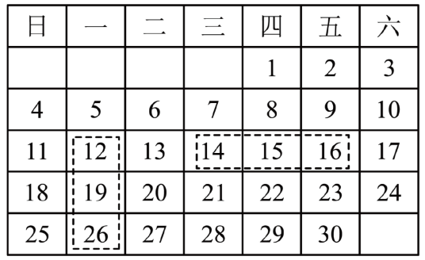
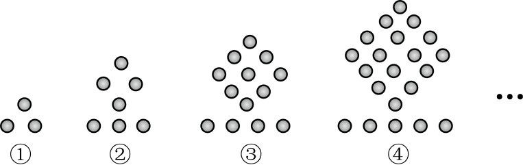
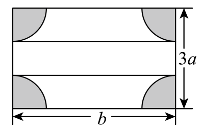

第三章 整式及其加减·培优卷
【北师大版2024】
参考答案与试题解析
第Ⅰ卷
一．选择题（共10小题，满分30分，每小题3分）
1．（3分）（24-25七年级上·甘肃兰州·期中）在式子n﹣3、a2b、m+s≤2、x、﹣ah、s＝ab中代数式的个数有（ ）
A．6个 B．5个 C．4个 D．3个
【答案】C
【分析】代数式即用运算符号把数与字母连起来的式子，依据此意义求解．
【详解】因为代数式即用运算符号把数与字母连起来的式子，所以n﹣3、a2b、x、﹣ah都是代数式，所以代数式的个数有4个．故选C．
【点睛】考核知识点：代数式．理解代数式的意义是关键．
2．（3分）（24-25七年级上·北京·期中）下列各单项式中，与−2nm2是同类项的是（ ）
A．5mn B．2n2 C．3m2n D．mn2
【答案】C
【分析】本题考查了同类项，根据同类项的定义，所含字母相同，并且相同字母的指数也相同的项是同类项，逐一判断即可求解，掌握同类项的定义是解题的关键．
【详解】解：A、所含字母的指数不相同，不是同类项，该选项不合题意；
B、所含字母的不相同，不是同类项，该选项不合题意；
C、所含字母相同，相同字母的指数也相同，是同类项，该选项符合题意；
D、所含字母的指数不相同，不是同类项，该选项不合题意；
故选：C．
3．（3分）（2025·浙江台州·二模）如果代数式x2−2x+5的值为3，那么代数式2x−x2的值等于（ ）
A．2 B．−2 C．8 D．−8
【答案】A
【分析】本题主要考查了代数式求值，根据题意可得x2−2x=−2，则2x−x2=−x2−2x=2．
【详解】解：∵代数式x2−2x+5的值为3，
∴x2−2x+5=3，
∴x2−2x=−2，
∴2x−x2=−x2−2x=−−2=2，
故选：A．
4．（3分）（24-25七年级下·甘肃甘南·期末）若x是一个实数，则3x+1和4x+1的大小关系为（ ）
A．3x+1>4x+1 B．3x+1<4x+1
C．3x+1≤4x+1 D．不确定
【答案】D
【分析】本题主要考查了整式加减的应用，通过比较两个代数式的大小，需考虑它们的差值的符号，由于x的取值范围影响结果，因此需分情况讨论．
【详解】解：∵3x+1−4x+1=3x+1−4x−1=−x，
∴当x>0时，−x<0，则3x+1<4x+1，
当x<0时，−x>0，则3x+1>4x+1，
当x=0时，差值为0，两式相等，
由于题目未限定x的范围，x可为正数、负数或零，导致大小关系随x变化而不同，因此无法确定唯一的大小关系．
故选：D．
5．（3分）（24-25七年级上·广东广州·期末）在学习了整式的加减后，老师出了一道课堂练习题：
选择一个a值，求：5a2−ab+3ab−3a2−2ab−2a2+2035的值
甲说：“当a=0时，原式=2035”
乙说：“当a=1时，原式=2035”
丙说：“只选择一个a值，没有选择b的值，不能求出代数式的准确值”
丁说：“当a为任何一个有理数时，原式=2035”这四位同学中，谁的说法是错误的？（ ）
A．甲 B．乙 C．丙 D．丁
【答案】C
【分析】本题主要考查了整式加减中的无关型问题，合并同类项求出5a2−ab+3ab−3a2−2ab−2a2+2035的化简结果为2035，即该多项式的结果与a，b的取值无关，据此可得结论．
【详解】解：5a2−ab+3ab−3a2−2ab−2a2+2035
=2035，
∴多项式5a2−ab+3ab−3a2−2ab−2a2+2035的结果恒等于2035，与a，b的取值无关，
∴丙同学的说法是错误．
故选：C．
6．（3分）（2025·云南昆明·三模）按一定规律排列的代数式：1+x2，3+x3，5+x4，7+x5，…，第n个代数式是（ ）
A．2n−1+xn+1 B．2n−1+xn C．2n+1+xn+1 D．2n+1+xn
【答案】A
【分析】此题考查了数字的变化规律，解此题的关键是明确题意，发现常数项和字母指数的变化特点及规律．
观察代数式的常数项和x的指数部分各自的规律，分别推导出第n项的表达式，再结合选项判断．
【详解】解：当n=1时，第一个代数式为：1+x2，
当n=2时，第二个代数式为：3+x3=2×2−1+x2+1，
当n=3时，第三个代数式为：5+x4=2×3−1+x3+1，
当n=4时，第四个代数式为：7+x5=2×4−1+x4+1，
∴第n个代数式是2n−1+xn+1．
故选：A．
7．（3分）（24-25七年级上·湖南郴州·期中）某月的月历表如图所示，任意圈出一横行或一竖列相邻的三个数，三个数的和不可能是（ ）

A．24 B．36 C．50 D．60
【答案】C
【分析】本题考查了列代数式及整式的加减运算，根据题意把任意圈出一横行或一竖列相邻的三个数用代数式表示出来，并不出这三个数的和是关键．用代数式表示任意一横行或一竖列相邻的三个数，并计算出和即可判断．
【详解】解：设任意一横行相邻的三个数分别为a−1，a，a+1，则a−1+a+a+1=3a，
设任意一竖列相邻的三个数分别为b−7，b，b+7，则b−7+b+b+7=3b，
其中a、b为正整数，显然3a、3b都是3的倍数，而24、36、60都是3的倍数，50则不是3的倍数，
则三个数的和不可能是50．
故选：C．
8．（3分）（24-25七年级上·广东惠州·期中）无论x,y取何值，多项式2x2+ax−4y+1−2x2+3x−by−4的值不变，则（ ）
A．a=6，b=2 B．a=2，b=6 C．a=−6，b=−2 D．a=6，b=−2
【答案】A
【分析】此题考查了整式加减中的无关型问题，熟练掌握整式加减的运算法则是关键．去括号合并同类项得到a−6x+2b−4y+9，根据题意得到a−6=0，−4+2b=0，即可得到答案．
【详解】解：原式展开并合并同类项：2x2+ax−4y+1−2x2+3x−by−4 =2x2+ax−4y+1−2x2−6x+2by+8
=a−6x+2b−4y+9
∵无论x,y取何值，多项式2x2+ax−4y+1−2x2+3x−by−4的值不变，
∴a−6=0，−4+2b=0，
∴a=6，b=2，
故选：A
9．（3分）（2025·河北唐山·二模）如图，嘉淇将一正方形纸片ABCD裁剪成①，②，③，④四块，其中①～③是三块小矩形，④是一块小正方形．若已知矩形②和③的周长和为20，则正方形ABCD与正方形④的周长和为（ ）

A．20 B．30 C．35 D．40
【答案】D
【分析】本题考查了整式的加减的应用，依题意，设长方形②的宽为b，长为a，则长方形③的长为a，设长方形③的宽为c，根据图形可得2a+b+c=10，进而得出正方形④的周长为4a，正方形ABCD的周长为4a+b+c，根据整式的加减即可求解．
【详解】解：依题意，设长方形②的宽为b，长为a，则长方形③的长为a，设长方形③的宽为c，
∵长方形②与③的周长和为20，
∴2a+2b+2a+2c=20，
∴22a+b+c=20，
∴2a+b+c=10，
∵④是正方形，
∴正方形④的周长为4a，正方形ABCD的周长为4a+b+c，
∴两个正方形的周长和为：
4a+4a+b+c=42a+b+c=4×10=40，
故选：D．
10．（3分）（24-25七年级下·广东广州·期末）甲、乙两名同学各提一个水桶在同一个水龙头前打水．如果甲打满一桶水需要41+a2分钟，乙打满一桶水需2a2+1分钟，要使两人都打满一桶水所用时间和（包括等待时间）最少，应如何安排？（ ）
A．安排甲先打水 B．安排乙先打水
C．甲、乙的打水顺序不影响总时间 D．无法确定
【答案】B
【分析】本题主要查了不等式的应用，解题关键是熟练掌握作差法，通过比较单次打水时间，依据让用时短者先打水可最小化总等待时间的原则，计算并对比不同顺序的总时间来确定最优安排 ；
分两种情况讨论：若甲先打水，和若乙先打水，分别求出两人都打满一桶水所用时间和，比较即可求解．
【详解】∵4a2+4−2a2+1=2a2+3，
由于a2≥0，故2a2+3>0，
即乙的单次打水时间比甲短．
故乙的打水时间总比甲短．
甲打水时间为41+a2=4a2+4分钟，乙打水时间为2a2+1分钟．乙等待甲打水的时间∶4a2+4分钟，加上乙自己打水的时间b分钟，
此时两人都打满一桶水所用时间和为4a2+4+4a2+4+2a2+1=24a2+4+2a2+1=10a2+9分钟；
若乙先打水，
乙打水时间∶2a2+1分钟，甲等待乙打水的时间∶2a2+1分钟，加上甲自己打水的时间41+a2=4a2+4钟，
此时两人都打满一桶水所用时间和为2a2+1+2a2+1+4a2+4=22a2+1+4a2+4=8a2+6分钟；
∴10a2+9−8a2+6=2a2+3>0
∴乙先打水时总时间更短．
故选：B．
二．填空题（共6小题，满分18分，每小题3分）
11．（3分）（24-25七年级下·四川雅安·期中）多项式3xm−4−5x−m是关于x的四次三项式，则m的值是 ．
【答案】8
【分析】本题考查多项式的概念，熟练掌握单项式的个数就是多项式的项数，这些单项式中最高次项的次数就是这个多项式的次数是解题的关键．
利用多项式次数和项数的确定方法可得|m−4|=4，且m≠0，再求解即可．
【详解】解：∵多项式3xm−4−5x−m是关于x的四次三项式，
∴|m−4|=4，
∴m=8或0，
又∵m≠0，
∴m=8，
故答案为：8．
12．（3分）（24-25七年级上·江西南昌·期中）某商品进价是a元，先按进价提高100元定价，后又按定价的8折出售，则该商品的售价为 元．（用含a的式子表示）
【答案】0.8a+80
【分析】本题主要考查了列代数式在现实生活中的实际应用问题；根据题意直接列出代数式，化简即可解决问题．
【详解】解：商品的售价为810(a+100)=(0.8a+80)元，
故答案为：(0.8a+80)．
13．（3分）（24-25七年级上·黑龙江齐齐哈尔·期中）已知多项式A、B，其中B=5x2+3x−4，马小虎同学在计算“A+B”时，误将“A+B”看成了“A−B”，求得的结果为12x2−6x+7，则多顶式A为 ．
【答案】17x2−3x+3
【分析】本题主要考查了整式加减运算，熟练掌握相关运算法则是解题关键．根据题意可得A−B= 12x2−6x+7，然后将B=5x2+3x−4代入并求解即可．
【详解】解：根据题意，A−B= 12x2−6x+7，
即A−5x2+3x−4=12x2−6x+7，
∴A=12x2−6x+7+5x2+3x−4=17x2−3x+3；
故答案为：17x2−3x+3．
14．（3分）（24-25七年级上·山东滨州·期末）已知m−14+n+0.5=0，则43m2n−mn2−23mn2−m2n−14m2n= ．
【答案】−2.5
【分析】本题考查了非负数的性质，整式求值，根据非负数的性质求出m,n的值是解题的关键.
先根据非负数的性质求出m,n的值，再根据整式的加减化简整式，最后将m,n的值代入计算即可.
【详解】解：∵ m−14+n+0.5=0，m−14≥0，n+0.5≥0，
∴m−1=0,n+0.5=0，
∴m=1,n=−0.5，
∴43m2n−mn2−23mn2−m2n−14m2n
=12m2n−4mn2−6mn2+2m2n−14m2n
=−10mn2
=−10×1×−0.52
=−10×0.25
=−2.5.
故答案为：−2.5
15．（3分）（24-25七年级上·福建莆田·期中）如果整式A和整式B的和为一个常数a，我们称A、B为常数a的“和谐整式”．例如：2x−7和−2x+6为数−1的“和谐整式”．若关于x的整式9x2+mx+6与−nx2−3x+2m−n为常数k的“和谐整式”．则常数k的值是 ．
【答案】3
【分析】本题考查了整式的加减，解题的关键是理解和谐整式的概念，正确计算．根据题意得(9−n)x2+(m−3)x+6+2m−n=k，则9−n=0m−3=0，解得，n=9m=3，将n=9m=3代入6+2m−n，进行计算即可得．
【详解】解：∵关于x的整式9x2+mx+6与−nx2−3x+2m−n为常数k的“和谐整式”，
∴9x2+mx+6+(−nx2−3x+2m−n)=k，
(9−n)x2+(m−3)x+6+2m−n=k，
则9−n=0m−3=0
解得，n=9m=3，
∴6+2m−n=6+2×3−9=3=k，
故答案为：3．
16．（3分）（24-25七年级上·北京·期中）如图是用棋子摆成的图案，按照这样的规律摆下去：

摆成第⑤个图案需要棋子的个数为 ；
摆成第n个图案需要棋子的个数为 ；
【答案】 31 n2+n+1
【分析】本题主要考查图形的变化规律，根据图形的变化归纳出第n个图案需要黑色棋子个数为(n2+n+1)是解题的关键．
根据图形的变化归纳出第n个图案需要棋子个数为：n2+n+1，即可求解．
【详解】解：由图知，第①个图案中棋子的个数为1+2=12+1+1，
第②个图案中棋子的个数为4+3=22+2+1，
第③个图案中棋子的个数为9+4=32+3+1，
第④个图案中棋子的个数为16+5=42+4+1，
…，
∴第⑤个图案中棋子的个数为52+5+1=31；
∴第n个图案需要棋子个数为n2+n+1．
故答案为：31，n2+n+1．
第Ⅱ卷
三．解答题（共8小题，满分72分）
17．（6分）（24-25七年级上·北京·期中）化简：
(1)2x2−5x+x2+4x
(2)a3−2a2+1−23a2−2a+12
【答案】(1)3x2−x
(2)a3−8a2+4a
【分析】本题考查了整式的加减运算，正确合并同类项是解题的关键．
（1）直接合并同类项得出答案；
（2）直接去括号进而合并同类项得出答案．
【详解】（1）解：2x2−5x+x2+4x
=3x2−x；
（2）解：a3−2a2+1−23a2−2a+12
=a3−2a2+1−6a2+4a−1
=a3−8a2+4a．
18．（6分）（24-25七年级上·甘肃兰州·期中）已知A=3x2+xy+y，B=2x2−xy+2y
(1)化简2A−3B；
(2)若|x−2|+(y+3)2=0，求2A−3B的值．
【答案】(1)5xy−4y
(2)−18
【分析】本题考查整式的加减运算，解题的关键是熟练运用整式的加减运算法则．
（1）根据整式的加减运算法则进行化简，
（2）根据题意可求出x与y的值，然后将x与y的值代入2A−3B中即可求出答案．
【详解】（1）解：2A−3B，
=2(3x2+xy+y)−3(2x2−xy+2y)，
=6x2+2xy+2y−6x2+3xy−6y
=5xy−4y；
（2）解：∵|x−2|+(y+3)2=0，
∴x=2，y=−3，
当x=2，y=−3时，
2A−3B=5xy−4y，
=5×2×(−3)−4×(−3)，
=−18．
19．（8分）（24-25七年级上·陕西宝鸡·期中）已知关于x、y的单项式2ax3yn与3bx2m−3y5的和是单项式．
(1)求8m−n22的值；
(2)已知其和（关于x、y的单项式）的系数是2，求2a+3b−32024．
【答案】(1)−12
(2)1
【分析】本题考查了合并同类项：把同类项的系数相加，所得结果作为系数，字母和字母的指数不变．也考查了求代数式的值．
（1）根据合并同类项和同类项的定义得到2m−3=3,n=5，然后求出m，n，后再利用乘方的意义计算代数式的值；
（2）利用合并同类项得到2a+3b=2，然后利用整体代入的方法和乘方的意义计算代数式的值．
【详解】（1）解：∵关于x、y的单项式2ax3yn与3bx2m−3y5的和是单项式；
∴2m−3=3,n=5，解得m=3，n=5,
∴ 8m−n22=8×3−522=24−252=−12；
（2）解：根据题意得2a+3b=2，
所以原式=(2−3)2024=1．
20．（8分）（24-25七年级上·安徽合肥·阶段练习）对于多项式n−1xm+2−3x2+2x（其中m是大于−2的整数）．
(1)若n=2，且该多项式是关于x的三次三项式，求m的值；
(2)若该多项式是关于x的五次三项式，则m、n要满足什么条件？
【答案】(1)1
(2)m=3且n≠1
【分析】本题考查多项式，理解多项式的相关定义是解答的关键．
（1）利用多项式的定义，得出x的次数进而得出答案；
（2）利用多项式的定义，得出x的次数与系数进而得出答案．
【详解】（1）解：n=2时，原多项式变为xm+2−3x2+2x，
∵该多项式是关于x的三次三项式，
∴m+2=3，解得m=1，即m的值为1；
（2）解：由题意得：n−1≠0且m+2=5，即m=3且n≠1．
21．（10分）（24-25七年级上·贵州六盘水·期末）已知关于x的多项式M和N，其中M=(a+2)x2+(b−1)x−3（a,b为常数），N=5x2−3x．
(1)若多项式(a+2)x2+(b−1)x−3中不含x2项，求a的值；
(2)当a=3,b=−2时，求3M−N；
(3)在（2）的条件下，若−5x2+3x+4=0，求3M−N的值．
【答案】(1)a=−2
(2)3M−N=10x2−6x−9
(3)3M−N=−1
【分析】本题考查的是整式的加减运算，求解代数式的值；
（1）由多项式(a+2)x2+(b−1)x−3中不含x2项，可得a+2=0，再进一步求解即可；
（2）先代入，再去括号，合并同类项即可；
（3）由条件可得：5x2−3x=4，再进一步变形整体代入计算即可.
【详解】（1）解：∵多项式(a+2)x2+(b−1)x−3中不含x2项
∴a+2=0，
∴a=−2；
（2）解：当a=3,b=−2时
3M−N=35x2−3x−3−5x2−3x
=15x2−9x−9−5x2+3x
=10x2−6x−9；
（3）解：由（2）可知，3M−N=10x2−6x−9
∵−5x2+3x+4=0，
∴5x2−3x=4，
∴3M−N=25x2−3x−9
=2×4−9
=−1；
22．（10分）（24-25七年级上·安徽合肥·期中）已知两种商品A，B，商品A成本价为a元，提高20%后出售，商品B亏本20%后售价为a元．
(1)用代数式表示商品A的售价_____元，商品B的成本价_____元，
(2)若出售了m件商品A和100−m件商品B，则用代数式表示一共盈亏多少元（结果化简）？
(3)在（2）的条件下，说明a=500，m=60时的盈亏情况．
【答案】(1)1.2a,54a
(2)一共盈亏0.45am−25a元（结果如果为正，表示盈利；如果为负，表示亏损）
(3)盈利1000元
【分析】本题考查了列代数式、代数式求值和整式加减的应用，正确列出相应的代数式、准确计算是解题的关键；
（1）根据商品A的售价为1+20%a元，商品B的成本价为a1−20%列式求解即可；
（2）先计算出一件A商品的盈利和一件B商品的盈利，再进一步计算即可；
（3）把a=500，m=60代入（2）的代数式中求解即可；
【详解】（1）解：∵商品A成本价为a元，提高20%后出售，商品B亏本20%后售价为a元，
∴商品A的售价为1+20%a=1.2a元，商品B的成本价a1−20%=54a元；
故答案为：1.2a,54a；
（2）解：一件A商品盈利为20%a=0.2a元，一件B商品盈利为a−54a=−0.25a元，
0.2am−0.25a100−m=0.2am−25a+0.25am=0.45am−25a；
答：一共盈亏0.45am−25a元（结果如果为正，表示盈利；如果为负，表示亏损）；
（3）解：当a=500，m=60时，0.45am−25a=0.45×500×60−25×500=1000（元），
答：盈利1000元．
23．（12分）（24-25七年级上·河北保定·期末）嘉嘉准备完成题目：化简⊕x2+3x+7−3x−35x2+1，发现系数“⊕”印刷不清楚．
(1)他把“⊕”猜成2，请你化简：2x2+3x+7−3x−35x2+1；
(2)妈妈对嘉嘉说：“你猜错了，我看到标准答案的结果是一个常数．”请你通过计算说明原题中的“⊕”是几．
【答案】(1)135x2+6
(2)−35
【分析】本题主要考查了整式的加减，熟练掌握运算法则是解题的关键．
（1）先去括号，再合并同类项即可；
（2）先去括号，再合并同类项，根据题意得出⊕+35=0，计算即可得到答案．
【详解】（1）解：2x2+3x+7−3x−35x2+1
=2x2+3x+7−3x+35x2−1
=135x2+6；
（2）解：⊕x2+3x+7−3x−35x2+1
=⊕x2+3x+7−3x+35x2−1
=⊕+35x2+6，
∵ ⊕x2+3x+7−3x−35x2+1的标准答案的结果是一个常数，
∴⊕+35=0，
∴⊕=−35.
24．（12分）（2025六年级下·全国·专题练习）如图是某一长方形闲置空地，宽为3a米，长为b米．为了美化环境，准备在这个长方形空地的四个顶点处分别修建一个半径a米的扇形花圃（阴影部分），然后在花圃内种花，中间修一条长b米，宽a米的小路，剩余部分种草．

(1)小路的面积为 平方米；种花的面积为 平方米；（结果保留π)
(2)请计算该长方形场地上种草的面积；（结果保留π)
(3)当a=2，b=10时，请计算该长方形场地上种草的面积．(π取3.14，结果精确到1)
【答案】(1)ab，πa2
(2)长方形场地上种草的面积为(2ab−πa2)平方米
(3)该长方形场地上种草的面积为27平方米
【分析】本题主要考查了列出代数式，整式加减的应用，代数式求值，
对于（1），利用长方形和扇形面积公式求解；
对于（2），根据种草的面积是整个长方形的面积减去小路面积和扇形花圃面积即可；
对于（3），由此利用已知数据求出种草的面积即可．
【详解】（1）解：依题意得小路的面积为ab平方米，种花的面积为14πa2×4=πa2平方米，
故答案为：ab，πa2；
（2）解：该长方形场地上种草的面积为：3a⋅b−ab−πa2=(2ab−πa2)平方米，
故长方形场地上种草的面积为(2ab−πa2)平方米；
（3）解：当a=2，b=10时，2ab−πa2≈2×2×10−3.14×2×2=27.44≈27平方米．
答：该长方形场地上种草的面积为27平方米．